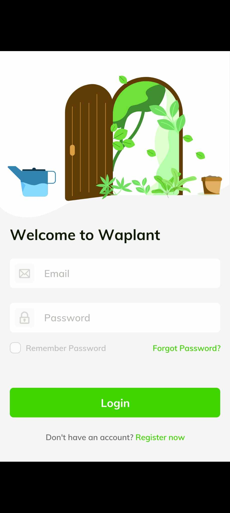
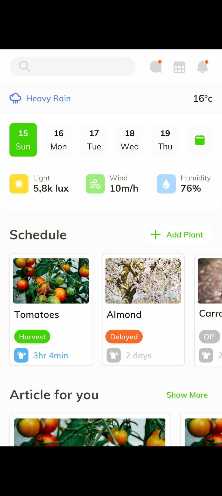
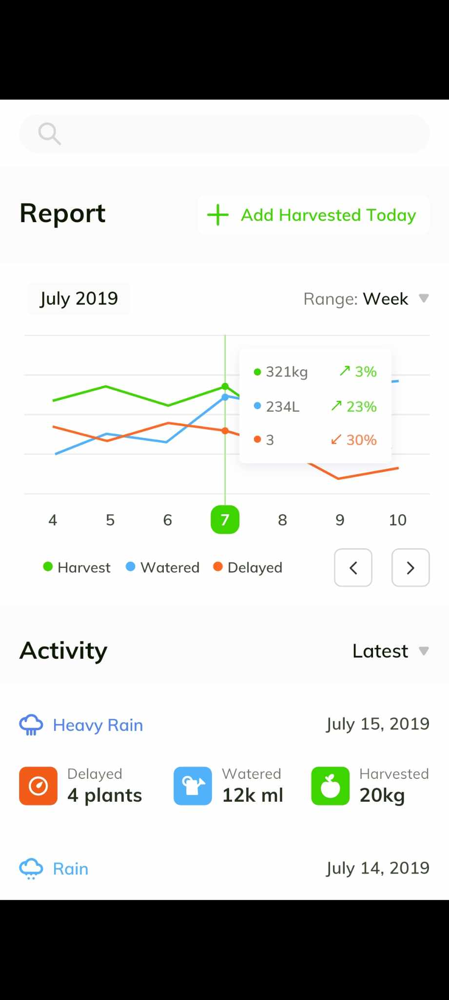
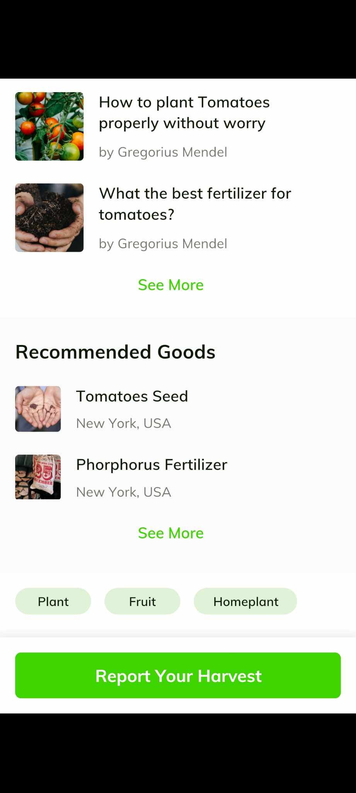
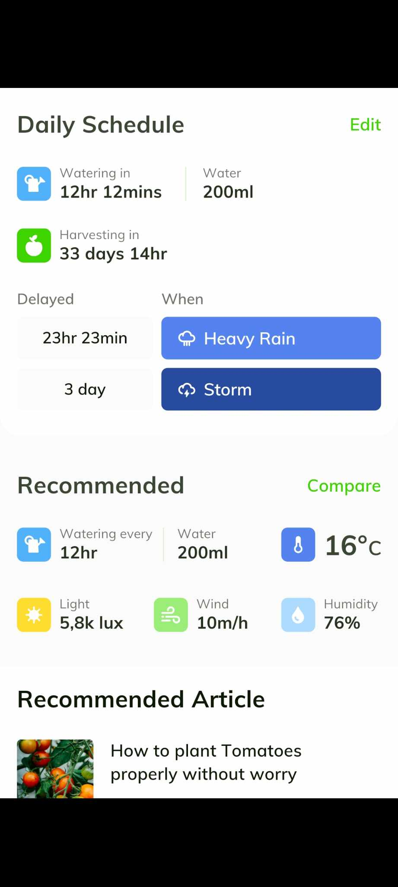
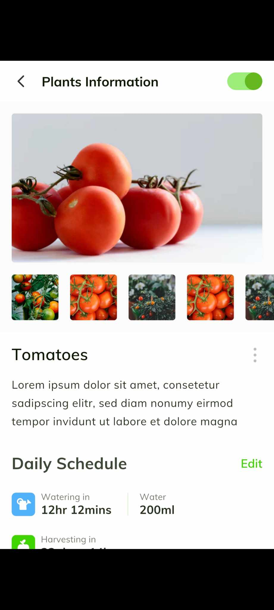
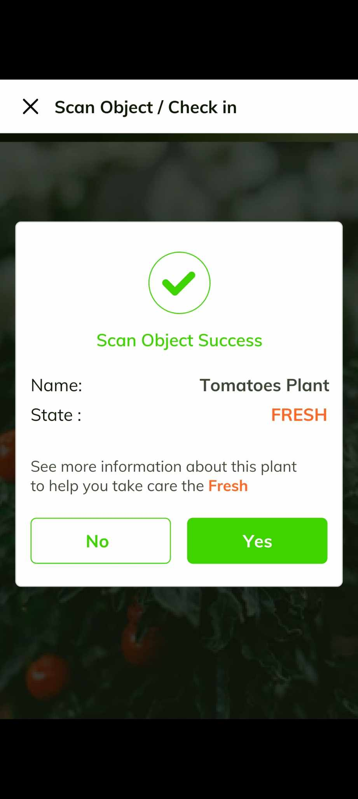
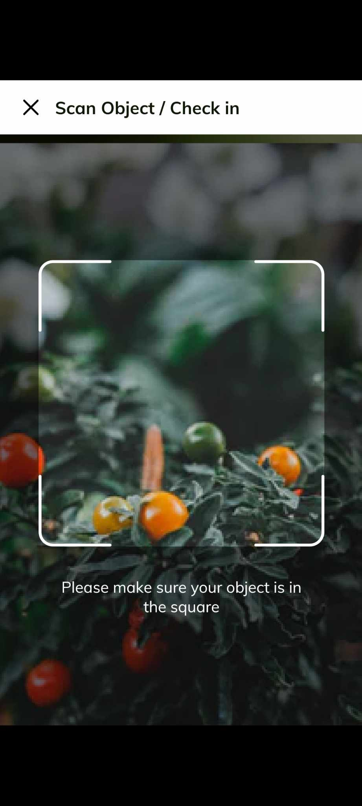
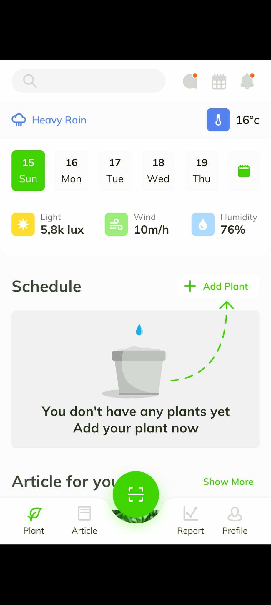

"The project's home page is the gateway to the Smart Garden Monitoring System. Users log in securely with their email and password, gaining access to personalized garden insights and controls. It's the key to unlocking a seamless and intelligent gardening experience "
"On these page, users delve into a wealth of information – from real-time weather updates to insightful articles on trees, light, wind, humidity, and scheduling. It's a comprehensive hub for all things related to smart gardening, providing users with the knowledge and data they need to optimize their garden environment."
"Users access a dynamic dashboard featuring real-time activity and detailed reports on weather conditions. In addition, there are informative articles covering tree health, light, wind, and other key elements. It's a central hub for tracking and analyzing garden data, empowering users to make informed decisions for a thriving garden ecosystem."
"Users receive personalized recommendations on the health of their trees – identifying what's thriving and areas that may need attention. It's a tailored guide for optimizing tree care, ensuring users can make informed decisions to nurture a flourishing garden."
"Users discover tailored daily schedules for their garden activities along with informative articles. It's a curated space that provides users with recommended schedules and valuable insights, contributing to a well-planned and efficient gardening experience."
"On the page, users explore a wealth of information about their plants. From care tips to species details, it's a comprehensive resource that empowers users with the knowledge needed for optimal plant health and growth in their smart garden."
"Users can leverage the scanning feature to assess the real-time situation of their plants. It's a cutting-edge tool that allows for quick and efficient monitoring,ensuring users stay connected with the well-being of their plants in the Smart Garden Monitoring System."
"Users gain the ability to scan their plants for instant insights. This innovative feature provides a quick and detailed analysis, allowing users to stay informed about the well-being of their plants within the Smart Garden Monitoring System."
"On the last page, users have the freedom to expand their garden by effortlessly adding new plants. It's a user-friendly feature that empowers garden enthusiasts to cultivate and diversify their green spaces within the Smart Garden Monitoring System, fostering a personalized and ever-growing ecosystem"
